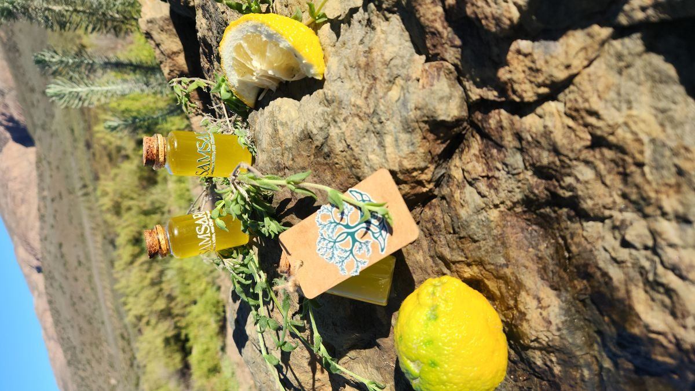
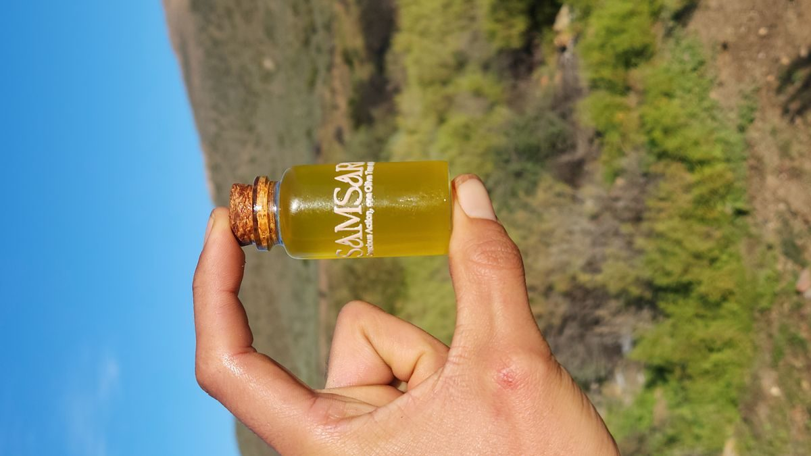
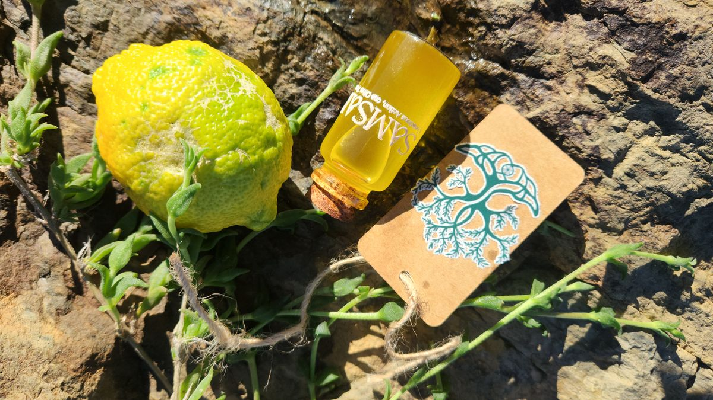
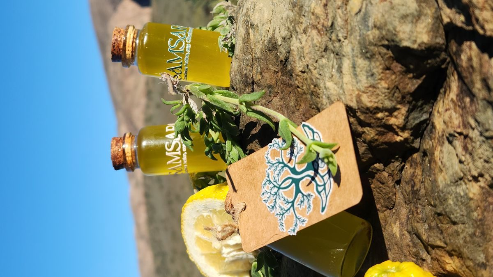

A daily grounding ritual of olive oil, lemon & sceletium — cold-pressed, raw, and rooted in ancient plant wisdom.

The Samsara Ritual Health Shot is a concentrated morning blend of extra virgin olive oil, fresh lemon, and sceletium — designed to support clarity, calmness, digestion, and long-term vitality.
Format: 14 individual daily shots per box
Volume: 30ml per shot
Ingredients: Extra virgin olive oil, fresh lemon juice, sceletium extract
Processing: Cold-pressed, unfiltered, raw — no heat, no additives
Origin: VrischGewagt Olive Farm, Swartberg Karoo, SA
Storage: Refrigerate after opening. Best consumed within 14 days.


Taken each morning on an empty stomach, the Ritual Shot is more than a supplement — it is a daily pause, a grounding practice, and a conscious start to the day.